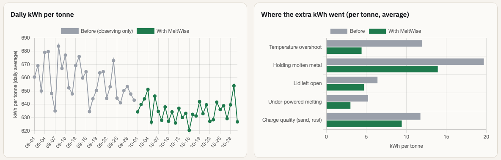
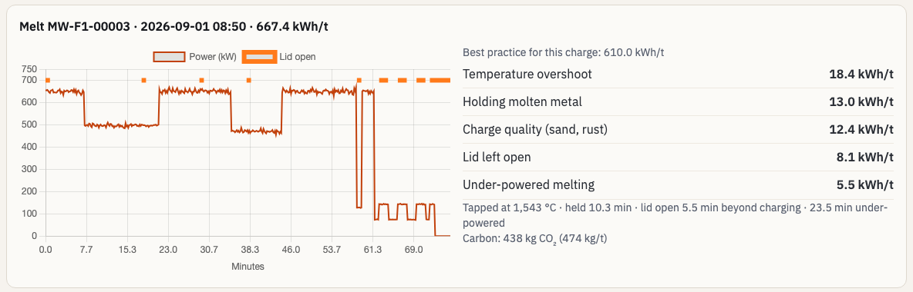
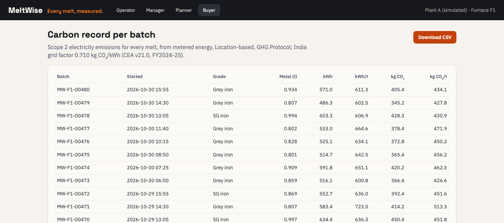

Manager, planner and buyer



Manager: daily kWh/t, avoidable kWh by cause, savings in ₹ and CO₂. Any melt opens its power curve and breakdown: this one used 667 kWh/t against 610 for its charge.
Buyer: Scope 2 CO₂ per batch from metered energy (GHG Protocol, CEA 0.710 kg/kWh), as CSV. Planner: start times that cut holding.
MeltWise · Yuva Yodha 2026 · Phase 2 prototype
7